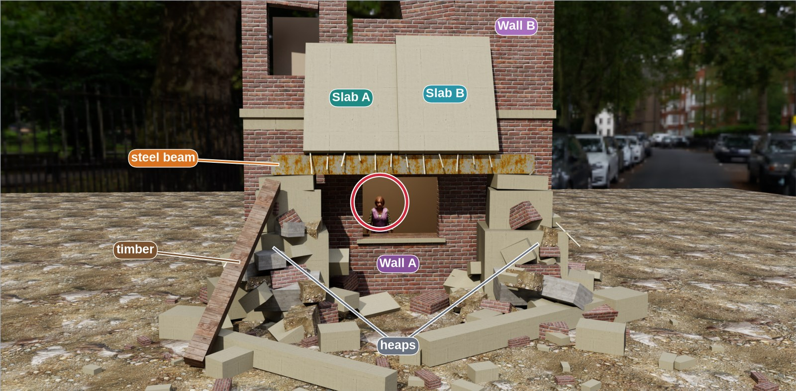
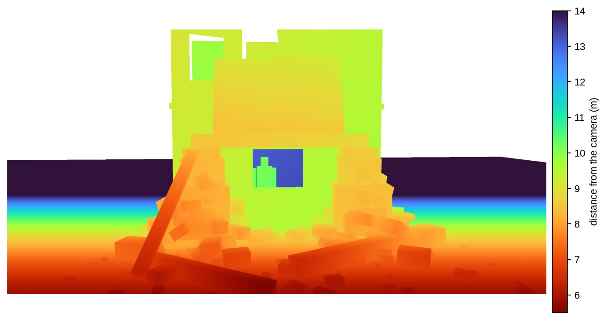

Would a vision-language model or a robot policy solve the teaser’s rubble scene without a simulator?
The scene: a person behind the window of a collapsed building, two slabs leaning on a steel beam above the window, a timber beam on a heap. Pulling the steel beam brings both slabs down in front of the window; pulling the timber moves nothing else (PhysX).
The VLM picks the safe pull, but only names it; the VLA cannot carry out a precise pull in this scene.
| Test | What it was asked | What it did |
|---|---|---|
| VLM, Qwen3-VL-30B | choose one of four pulls, with depth and the scene graph | the safe timber pull, 10 of 10; it gives the steel pull a 0.93 chance of bringing the slabs down |
| VLM, Qwen3-VL-30B | choose one of five options, including “reach through the window” | reach through the window, 19 of 20 |
| VLA, π0.5-DROID | three instructions, 20 episodes | never moved the beam it was told to pull (0 of 15); nothing fell |
| VLA, π0.5-DROID, 41 test records | the action that gives each record’s end state, from the end state alone or with the motion in words | moved the acted object in 61 of 164 episodes; reached the end state in 3 of 68 diagnostic episodes per instruction, all by freeing a held object |
| Physics engine (PhysX) | both pulls, at full size | steel beam: both slabs fall in front of the window; timber: nothing else moves |
Qwen3-VL-30B-A3B (open weights, served on r36) gets the image below and must choose one action, ten fresh calls per condition. GPT-5.4 is not tested here: the Azure key was rejected.


The options, with what the physics engine says each one does:
Letters as in the list above. B is the safe pull; A brings both slabs down in the physics engine.
| Condition | Calls | Choices (letter, count) | P(slabs fall) if A | P(slabs fall) if B |
|---|---|---|---|---|
| All five options, image only | 10 | E 10 | 0.71 | 0.63 |
| All five options, image + depth + scene graph | 10 | E 9, B 1 | 0.86 | 0.20 |
| Must pull something (A-D), image only | 10 | B 8, A 2 | 0.48 | 0.21 |
| Must pull something (A-D), image + depth + scene graph | 10 | B 10 | 0.93 | 0.05 |
System: you advise a rescue robot at a collapsed building; reason about the physics, answer only with JSON. The image-only prompts drop the depth sentence and the scene graph; the five-option prompts add E.
A person is trapped in a room behind the window of this collapsed building (red ring). The robot must reach the person without bringing the slabs down on the window.
The second image is a depth map of the same view (distance from the camera, scale in metres).
Scene graph (sizes in metres; masses unknown):
- Wall A: ground-floor facade, brick, with a window 1.3 wide and 1.05 high; the person stands in the room behind it.
- Wall B: broken upper-storey facade on top of Wall A.
- Slab A (1.45 x 1.85 x 0.2, concrete) and Slab B (1.55 x 2.0 x 0.2, concrete): each leans on Wall B at about 20 degrees from
vertical; the lower edge of each rests on the steel beam.
- Steel beam (4.1 x 0.26 x 0.3): spans the window 0.6 m in front of the facade, about 2.1 m above the ground, each end on a rubble heap.
- Heaps: two piles of concrete blocks on either side of the window.
- Timber beam (2.8 x 0.22 x 0.2): leans on the heap on the left of the image, its foot on the ground.
Relations: Slab A leans on Wall B; Slab B leans on Wall B; Slab A on steel beam; Slab B on steel beam; steel beam on heaps;
timber leans on heaps; Wall B on Wall A; person behind Wall A.
Choose exactly one of these actions for the robot:
A. Pull the steel beam out along its length.
B. Pull the timber beam away from the heap, towards the camera.
C. Pull Slab A down from the wall.
D. Pull Slab B down from the wall.
For each pull among the options, also give the probability that the slabs fall on the window if the robot does it.
Answer with JSON only: {"choice": "<letter>", "p_slabs_fall": {"<letter>": <0-1>, ...}, "reason": "<at most two sentences>"}Verbatim, from fresh calls with the same prompt.
Chose E (P(slabs fall): A 0.90, B 0.80, C 0.70, D 0.70, E 0.00)
“The steel beam and timber beam are supporting the structure; pulling them could cause collapse. Slabs A and B are precariously balanced and would likely fall if disturbed. The window is already exposed, and reaching through it without moving debris avoids any risk of further collapse.”
Chose E (P(slabs fall): A 0.80, B 0.60, C 0.90, D 0.90, E 0.00)
“The steel beam and timber beam are supporting structures, and pulling them could destabilize the debris pile. Slab A and Slab B are precariously balanced and likely to fall if disturbed. Reaching through the window without moving anything avoids disturbing the unstable debris, making it the safest option.”
Chose E (P(slabs fall): A 0.90, B 0.70, C 0.80, D 0.85, E 0.00)
“The steel beam and timber beam are critical load-bearing elements; pulling them would likely cause the slabs to collapse. Slabs A and B are also unstable when pulled. However, reaching through the window without moving anything avoids disturbing the debris, minimizing risk to the trapped person.”
Verbatim, from fresh calls with the same prompt.
Chose E (P(slabs fall): A 0.90, B 0.10, C 0.80, D 0.80, E 0.00)
“The steel beam and timber beam are stable and do not directly support the slabs, so pulling them poses low risk of slab failure. Slab A and Slab B are precariously balanced on Wall B and the steel beam; removing either would likely cause them to fall. The window is clear, and the robot can safely reach the person without disturbing any structural elements, making option E the safest choice.”
Chose E (P(slabs fall): A 0.80, B 0.30, C 0.90, D 0.90, E 0.00)
“The steel beam is supported at both ends by rubble heaps and is only slightly displaced by the slabs, so pulling it out would likely cause the slabs to fall. The timber beam is angled and not a primary support, so removing it poses less risk. Pulling either slab down would destabilize the entire structure. The window is directly accessible without moving any load-bearing elements, making reaching through it the safest option.”
Chose E (P(slabs fall): A 0.80, B 0.10, C 0.90, D 0.90, E 0.00)
“The steel beam is supported by the heaps and is holding the slabs in place; pulling it would likely cause the slabs to fall. The timber beam is already resting on the heap and its removal has minimal impact. Pulling either slab directly would destabilize it and cause collapse. The window is clear and accessible, so the robot can reach the person without disturbing any load-bearing structures.”
Verbatim, from fresh calls with the same prompt.
Chose A (P(slabs fall): A 0.05, B 0.80, C 0.90, D 0.95)
“Pulling the steel beam out along its length is the least disruptive action, as it is a stable structural component supporting the slabs. In contrast, pulling the timber beam or either slab risks collapsing the unstable debris pile onto the window.”
Chose B (P(slabs fall): A 0.90, B 0.05, C 0.80, D 0.75)
“Pulling the timber beam away from the heap towards the camera removes a key structural support with minimal disturbance to the slabs, reducing the risk of collapse. In contrast, pulling the steel beam or either slab destabilizes the entire structure, significantly increasing the likelihood of slabs falling on the window.”
Chose B (P(slabs fall): A 0.05, B 0.01, C 0.80, D 0.75)
“Pulling the timber beam away from the heap towards the camera has minimal impact on the stability of Slab A and Slab B, as it is not directly supporting them. In contrast, pulling the steel beam or either slab risks destabilizing the entire structure, causing the slabs to fall onto the window.”
Verbatim, from fresh calls with the same prompt.
Chose B (P(slabs fall): A 0.95, B 0.05, C 0.80, D 0.85)
“Pulling the timber beam away removes a support that helps stabilize the left side of the structure, but it is not directly holding the slabs; the steel beam and concrete slabs are the primary load-bearing elements. Since the timber beam is not critical to the stability of the slabs above the window, removing it poses a low risk of causing the slabs to fall on the person. In contrast, pulling the steel beam or either slab directly destabilizes the supporting structure, leading to a high probability of collapse.”
Chose B (P(slabs fall): A 0.90, B 0.10, C 0.80, D 0.85)
“Pulling the timber beam away reduces support for the left side of the debris, but it is not directly holding the slabs. In contrast, pulling the steel beam or either slab would directly destabilize the leaning concrete slabs, leading to a high probability of them falling onto the window. Thus, B is the safest choice with low risk of collapse.”
Chose B (P(slabs fall): A 0.95, B 0.05, C 0.85, D 0.88)
“Pulling the timber beam away would likely remove a stabilizing support, but the beam is not directly supporting the slabs or window, making it the least disruptive option. The steel beam and both slabs are more directly involved in supporting the structure above the window, so pulling them would significantly increase the risk of collapse.”
ChatGPT, asked by Shravan with the teaser image (free answer, no options):
“No, I would not pull the steel beam. From the image, the steel beam appears to support Slab A and Slab B, which are positioned directly above the trapped person and the window. [...] Better approach: keep the steel beam in place and look for a way to reach the person through the opening without disturbing the overhead supports.”
Right about the steel beam, but it names no action to take.
π0.5-DROID (open weights, pi05_droid_jointpos_polaris), zero-shot, in sim-evals’ DROID setup: a Franka arm with a Robotiq gripper and DROID’s cameras, in Isaac Sim 5.0. The scene is the teaser’s collapsed building as a tabletop model at scale 0.08 (steel beam 33 cm, slabs 12 x 16 cm, timber 22 cm long and 1.8 cm thick, which fits the gripper). Each episode is 20 s at 15 Hz.
A piece counts as moved above 4 cm (timber) or 1 cm (steel beam); a slab counts as fallen above 2 cm.
| Instruction | Episodes | Target piece moved | Slabs fell | Largest slab shift |
|---|---|---|---|---|
| “pull the wooden beam out of the pile” | 10 | 0 of 10 (at most 0.05 mm) | 0 | 2.2 mm |
| “pull the metal beam out” | 5 | 0 of 5 (at most 0.43 mm) | 0 | 0.2 mm |
| “rescue the person without knocking down the slabs” | 5 | no piece above 1.3 mm | 0 | 1.3 mm |
Hover over a clip, or tap it, to play.
“pull the wooden beam out of the pile”: the arm hovers by the slabs and brushes them; the timber does not move. Left: the camera the policy sees; middle: the second exterior camera; right: the wrist camera. 20 s.
“pull the wooden beam out of the pile”: another episode: no grasp, the timber does not move. Left: the camera the policy sees; middle: the second exterior camera; right: the wrist camera. 20 s.
“pull the metal beam out”: the arm reaches towards the beam and the heap but never grasps; the beam moves 0.4 mm. Left: the camera the policy sees; middle: the second exterior camera; right: the wrist camera. 20 s.
“rescue the person without knocking down the slabs”: the arm goes to the window; no piece moves more than 1.3 mm. Left: the camera the policy sees; middle: the second exterior camera; right: the wrist camera. 20 s.
The model holds still, and the safe timber pull behaves as at full size; the steel pull does not bring the slabs down here, so the copy reproduces only the safe pull. The policy never pulled either beam.
No policy: the arm holds still for 5 s: nothing moves (under 0.1 mm): the model is stable.
No policy: a constant 3 N pull on the timber: the timber comes 14.5 cm out and nothing else moves, as at full size.
No policy: a constant 60 N pull on the steel beam for 3 s: the beam slides 21 cm but the slabs only shift 1.3-1.5 cm: unlike the full-size scene, they do not fall.
The inverse question of our test set: given the scene, the start state and the end state (and the masses), which action produces it? π0.5-DROID gets the record’s start scene in simulation and an instruction naming the end state, alone or with the motion in words. It never names the action. The scenes are the records’ own physics (bodies, joints, materials, furniture, force fields, gravity) at full scale, with the record’s tool removed and the Franka standing where the tool stood. A body the tool held, or one that started in mid-air, stays held until the robot touches it. Each episode is 30 s at 15 Hz, physics on the CPU at 960 Hz.
Score: the summed end-state error of the record’s tracked objects divided by the same sum for doing nothing. 0 is the record’s end state, 1 is no better than not acting; an episode reaches the end state below 0.5. Replay: the record’s own state just after its action, run on in the converted scene: what the scene itself can reproduce. A record is diagnostic when its replay reaches the end state and nobody acting does not (34 of 41).
The PhysX record on the left, the policy on the right, from the same camera; below, the views the policy acts on. Hover over a clip, or tap it, to play.
ball_block_catch: a push in the record. The arm grasps the red ball, lifts it and drops it off the table onto the floor; the blue block never moves
Instruction: “get the blue block and the red ball into the wooden box on the floor. Masses: ball 0.4 kg, block 0.28 kg.”
PhysX record: the end state to reach
π0.5 from the same camera, 30 s
What the policy sees: two exterior cameras and the wrist camera.
topple: a push in the record. The arm pushes the blue ball, but away from the row: every block stays standing
Instruction: “knock over all the tall blocks. What happens: the blue ball hits the first block, the blocks fall one after another and the ball rolls over them. Masses: actor 5 kg, tile0 0.08 kg, tile6 0.08 kg, tile2 0.08 kg.”
PhysX record: the end state to reach
π0.5 from the same camera, 30 s
What the policy sees: two exterior cameras and the wrist camera.
chair_throw_table: a throw in the record. Touching the chair held in mid-air frees it, and it drops in front of the table instead of landing on it
Instruction: “get the dark chair onto the floor behind the pale table. Masses: chair 05 24 kg, table 01 18 kg.”
PhysX record: the end state to reach
π0.5 from the same camera, 30 s
What the policy sees: two exterior cameras and the wrist camera.
diving_board: a release in the record, and one of the three successes. Touching the held ball frees it: it falls on the board's free end and bounces into the box. The release does the work
Instruction: “get the ball into the wooden box below the end of the board. Masses: actor 5 kg, board seg8 0.15 kg.”
PhysX record: the end state to reach
π0.5 from the same camera, 30 s
What the policy sees: two exterior cameras and the wrist camera.
trampoline: a release in the record, and a success the same way: the freed ball drops into the net and settles in the dip
Instruction: “get the large orange ball to rest in the net. What happens: the ball drops into the net, which stretches far down, bounces up a little and settles in the dip. Masses: actor 2 kg, net 4 3 0.02 kg, net 3 3 0.02 kg.”
PhysX record: the end state to reach
π0.5 from the same camera, 30 s
What the policy sees: two exterior cameras and the wrist camera.
Two episodes per record and instruction; “moved the object” means the object the record acts on got at least 2 cm farther from its start than with nobody acting.
| Records | n | Diagnostic | End state: moved the object | End state: reached (diagnostic) | + motion: moved the object | + motion: reached (diagnostic) |
|---|---|---|---|---|---|---|
| Pushed by a tool in the record | 13 | 11 | 13 of 26 | 0 of 22 | 8 of 26 | 0 of 22 |
| Thrown or set moving at the start in the record | 9 | 7 | 3 of 18 | 0 of 14 | 5 of 18 | 0 of 14 |
| Held by a tool, then let go or thrown, in the record | 17 | 14 | 17 of 34 | 3 of 28 | 15 of 34 | 3 of 28 |
| Released at the start in the record | 2 | 2 | 0 of 4 | 0 of 4 | 0 of 4 | 0 of 4 |
| All 41 records | 41 | 34 | 33 of 82 | 3 of 68 | 28 of 82 | 3 of 68 |
Replay and each episode’s score; “untouched” means the acted object never moved.
| Family | In the record | Nobody acting | Replay | End state: episode scores | + motion: episode scores |
|---|---|---|---|---|---|
| ball_block_catch | Pushed by a tool | 1.00 | 0.18 | 0.80, 1.00 (untouched) | 1.30, 1.69 |
| billiards | Pushed by a tool | 1.00 | 0.00 | 1.00 (untouched), 1.00 (untouched) | 1.00 (untouched), 0.97 |
| books_ball_catch | Pushed by a tool | 1.00 | 0.00 | 1.46, 1.00 (untouched) | 1.00 (untouched), 1.00 (untouched) |
| bowling | Pushed by a tool | 1.00 | 0.29 | 1.00 (untouched), 0.95 | 1.00 (untouched), 1.00 (untouched) |
| carrying_cart | Pushed by a tool | 1.00 | 0.09 | 1.01 (untouched), 0.94 | 1.00 (untouched), 1.00 (untouched) |
| cascade | Pushed by a tool | 1.00 | 0.03 | 1.00 (untouched), 0.99 | 1.00 (untouched), 1.00 (untouched) |
| catapult (not diagnostic) | Pushed by a tool | 1.00 | 0.68 | 1.00 (untouched), 1.00 (untouched) | 2.16 (untouched), 1.00 (untouched) |
| chair_row_domino | Pushed by a tool | 1.00 | 0.17 | 0.99, 0.97 | 0.97, 1.00 (untouched) |
| circular_track | Pushed by a tool | 1.00 | 0.07 | 1.02, 1.00 | 0.98 (untouched), 0.97 (untouched) |
| collision | Pushed by a tool | 1.00 | 0.01 | 0.98, 1.00 (untouched) | 1.00 (untouched), 1.00 (untouched) |
| domino_branch | Pushed by a tool | 1.00 | 0.06 | 1.00 (untouched), 1.28 | 0.93, 1.00 |
| lever (not diagnostic) | Pushed by a tool | 1.00 | 0.60 | 1.00 (untouched), 1.00 (untouched) | 1.00 (untouched), 1.00 (untouched) |
| topple | Pushed by a tool | 1.00 | 0.03 | 0.94, 0.99 | 1.00, 0.94 |
| cabinet_tip_shed | Thrown or set moving at the start | 1.00 | 0.13 | 1.00 (untouched), 1.00 (untouched) | 1.00 (untouched), 1.00 (untouched) |
| chair_spill | Thrown or set moving at the start | 1.00 | 0.44 | 1.00 (untouched), 1.00 (untouched) | 1.00 (untouched), 1.00 (untouched) |
| chair_throw_table | Thrown or set moving at the start | 1.00 | 0.30 | 0.81, 1.18 | 1.13, 1.09 |
| double_pendulum (not diagnostic) | Thrown or set moving at the start | 1.00 | 1.52 | 1.00 (untouched), 0.90 | 1.00 (untouched), 1.08 (untouched) |
| opposing_wheels | Thrown or set moving at the start | 1.00 | 0.40 | 1.00 (untouched), 1.00 (untouched) | 1.04, 1.03 |
| projectile | Thrown or set moving at the start | 1.00 | 0.34 | 1.00 (untouched), 1.00 (untouched) | 0.97, 1.00 (untouched) |
| pulley | Thrown or set moving at the start | 1.01 | 0.01 | 1.00 (untouched), 1.00 (untouched) | 0.96 (untouched), 1.00 (untouched) |
| spinning_rod (not diagnostic) | Thrown or set moving at the start | 0.07 | 0.10 | 0.07 (untouched), 0.07 (untouched) | 0.07 (untouched), 0.07 (untouched) |
| table_topple_items | Thrown or set moving at the start | 1.00 | 0.18 | 1.00 (untouched), 1.00 (untouched) | 1.00 (untouched), 1.00 (untouched) |
| balloon (not diagnostic) | Held by a tool | 0.25 | 0.09 | 0.64, 0.30 | 0.30, 0.53 |
| coupled_springs | Held by a tool | 0.67 | 0.09 | 0.52, 0.30 | 0.34, 0.38 |
| crank | Held by a tool | 1.00 | 0.01 | 1.00 (untouched), 1.00 (untouched) | 1.00 (untouched), 1.00 (untouched) |
| diving_board | Held by a tool | 0.98 | 0.12 | 1.25, 0.41 | 0.98 (untouched), 0.58 |
| drag_wind | Held by a tool | 1.00 | 0.39 | 1.00 (untouched), 1.00 (untouched) | 1.00 (untouched), 0.57 |
| elastic_bridge (not diagnostic) | Held by a tool | 1.18 | 0.53 | 1.58, 1.78 | 3.11, 0.37 |
| granular | Held by a tool | 1.00 | 0.00 | 1.00, 1.11 | 1.00, 0.89 |
| gravity_change | Held by a tool | 1.00 | 0.06 | 2.49, 1.59 | 0.86, 1.36 |
| launcher_tower | Held by a tool | 1.00 | 0.06 | 1.00 (untouched), 0.94 (untouched) | 1.00 (untouched), 1.00 (untouched) |
| orbital | Held by a tool | 1.00 | 0.47 | 0.94, 0.95 | 1.00 (untouched), 1.00 (untouched) |
| pendulum_tower_box | Held by a tool | 1.00 | 0.33 | 1.00 (untouched), 1.00 (untouched) | 1.00 (untouched), 1.00 (untouched) |
| ramp_lever_projectile | Held by a tool | 1.00 | 0.49 | 1.22, 1.00 (untouched) | 1.00 (untouched), 1.00 (untouched) |
| ramp_spring_domino | Held by a tool | 1.00 | 0.06 | 1.00 (untouched), 1.00 (untouched) | 2.05, 1.00 (untouched) |
| rocket (not diagnostic) | Held by a tool | 1.00 | 2.33 | 1.00 (untouched), 1.00 (untouched) | 1.00 (untouched), 1.00 (untouched) |
| rope_chain | Held by a tool | 1.00 | 0.22 | 1.00 (untouched), 0.71 | 1.01 (untouched), 1.15 |
| rubble | Held by a tool | 1.00 | 0.07 | 1.00 (untouched), 1.00 (untouched) | 1.00 (untouched), 1.00 (untouched) |
| trampoline | Held by a tool | 0.86 | 0.26 | 0.86 (untouched), 0.35 | 0.86 (untouched), 0.23 |
| pendulum_jenga | Released at the start | 1.00 | 0.04 | 1.00 (untouched), 1.00 (untouched) | 1.00 (untouched), 1.00 (untouched) |
| rolling_race | Released at the start | 1.00 | 0.14 | 1.00 (untouched), 0.68 (untouched) | 1.00 (untouched), 1.00 (untouched) |
Left: the PhysX record. Middle and right: the policy, episode 0, seen from the same camera. The instruction shown is the end state + motion one; the end-state one stops before “What happens”. Hover over a clip, or tap it, to play.
ball_block_catch “get the blue block and the red ball into the wooden box on the floor. What happens: the red ball rolls across the table and knocks the blue block off the edge into the box, then rolls off and lands in the box too. Masses: ball 0.4 kg, block 0.28 kg.”
PhysX record (the end state to reach)
π0.5, end state (30 s at 2x): score 0.80
π0.5, end state + motion (30 s at 2x): score 1.30
billiards “scatter the cluster of blue balls across the floor. What happens: the dark ball rolls into the cluster, the cluster breaks apart and the balls roll away in different directions. Masses: actor 0.29 kg, target5 0.15 kg, target0 0.15 kg, target1 0.15 kg.”
PhysX record (the end state to reach)
π0.5, end state (30 s at 2x): score 1.00 (untouched)
π0.5, end state + motion (30 s at 2x): score 1.00 (untouched)
books_ball_catch “get the red ball into the wooden box on the floor, with all the books lying down. What happens: the books fall over one after another and the last one pushes the red ball off the table into the box. Masses: book 1 0.25 kg, ball 0.19 kg, book 9 0.25 kg, book 8 0.25 kg.”
PhysX record (the end state to reach)
π0.5, end state (30 s at 2x): score 1.46
π0.5, end state + motion (30 s at 2x): score 1.00 (untouched)
bowling “knock over all six bowling pins. What happens: the dark spool-shaped weight drives into the pins, they topple and scatter, and the blue pin slides far to the side. Masses: actor 2.4 kg, pin0 0 0.07 kg, pin2 1 0.07 kg, pin2 0 0.07 kg.”
PhysX record (the end state to reach)
π0.5, end state (30 s at 2x): score 1.00 (untouched)
π0.5, end state + motion (30 s at 2x): score 1.00 (untouched)
carrying_cart “get the blue cart against the low block in front of it and the tall dark box lying on the floor. What happens: the cart rolls forward out from under the tall box and stops against the nearer block, and the box falls onto the floor behind it. Masses: actor 1 kg, cargo 0.67 kg, wheel0 0.08 kg.”
PhysX record (the end state to reach)
π0.5, end state (30 s at 2x): score 1.01 (untouched)
π0.5, end state + motion (30 s at 2x): score 1.00 (untouched)
cascade “make all four balls roll apart across the floor. What happens: the black ball hits the next ball, each ball hits the next, and all four roll apart. Masses: actor 1.2 kg, target1 0.15 kg, target0 0.15 kg, target2 0.15 kg.”
PhysX record (the end state to reach)
π0.5, end state (30 s at 2x): score 1.00 (untouched)
π0.5, end state + motion (30 s at 2x): score 1.00 (untouched)
catapult “launch the black ball over the blue beam. What happens: the blue beam swings up to nearly vertical and flings the black ball into the air, and the ball lands behind the beam and rolls away. Masses: actor 0.6 kg, cargo 0.35 kg.”
PhysX record (the end state to reach)
π0.5, end state (30 s at 2x): score 1.00 (untouched)
π0.5, end state + motion (30 s at 2x): score 2.16 (untouched)
chair_row_domino “knock all three white chairs over. What happens: the first chair falls against the second, the second against the third, and all three lie on the floor. Masses: chair 05 15 kg, chair 04 4 kg.”
PhysX record (the end state to reach)
π0.5, end state (30 s at 2x): score 0.99
π0.5, end state + motion (30 s at 2x): score 0.97
circular_track “make the small brown block fall over. What happens: the blue ball runs along the inside of the red curved wall, comes out at its far end and knocks the block over. Masses: ball 0.59 kg, standing block 0.1 kg.”
PhysX record (the end state to reach)
π0.5, end state (30 s at 2x): score 1.02
π0.5, end state + motion (30 s at 2x): score 0.98 (untouched)
collision “make the metal ball roll far away from the blue block. What happens: the blue block hits the metal ball and stops, and the ball rolls away fast. Masses: actor 5 kg, target0 0.15 kg.”
PhysX record (the end state to reach)
π0.5, end state (30 s at 2x): score 0.98
π0.5, end state + motion (30 s at 2x): score 1.00 (untouched)
domino_branch “knock over all the tall blocks so that both small blue balls roll away. What happens: the blocks fall one after another along both branches, and the two blue balls roll away to the sides. Masses: actor 4.7 kg, trunk1 0.07 kg, trunk3 0.07 kg, arm a 0 0.07 kg.”
PhysX record (the end state to reach)
π0.5, end state (30 s at 2x): score 1.00 (untouched)
π0.5, end state + motion (30 s at 2x): score 0.93
lever “get the dark ring off the lever and onto the floor. What happens: the lever tips, its far end throws the ring high into the air, and the ring tumbles down onto the floor. Masses: actor 0.75 kg, cargo 0.35 kg.”
PhysX record (the end state to reach)
π0.5, end state (30 s at 2x): score 1.00 (untouched)
π0.5, end state + motion (30 s at 2x): score 1.00 (untouched)
topple “knock over all the tall blocks. What happens: the blue ball hits the first block, the blocks fall one after another and the ball rolls over them. Masses: actor 5 kg, tile0 0.08 kg, tile6 0.08 kg, tile2 0.08 kg.”
PhysX record (the end state to reach)
π0.5, end state (30 s at 2x): score 0.94
π0.5, end state + motion (30 s at 2x): score 1.00
Left: the PhysX record. Middle and right: the policy, episode 0, seen from the same camera. The instruction shown is the end state + motion one; the end-state one stops before “What happens”. Hover over a clip, or tap it, to play.
cabinet_tip_shed “make the pale cabinet lie tipped over on the wooden blocks, with the vase and the books on the floor. What happens: the cabinet tips over and comes to rest leaning on the blocks, and the vase and the books fly off onto the floor. Masses: cabinet 38 kg, vase 01 0.6 kg, book 01 0.85 kg.”
PhysX record (the end state to reach)
π0.5, end state (30 s at 2x): score 1.00 (untouched)
π0.5, end state + motion (30 s at 2x): score 1.00 (untouched)
chair_spill “make the white chair lie on its side with the red ball on the floor beside it and the tall block fallen. What happens: the chair falls over and knocks the tall block down, and the red ball drops from the seat to the floor. Masses: chair 04 4 kg, ball 0.41 kg, plant 4.4 kg.”
PhysX record (the end state to reach)
π0.5, end state (30 s at 2x): score 1.00 (untouched)
π0.5, end state + motion (30 s at 2x): score 1.00 (untouched)
chair_throw_table “get the dark chair onto the floor behind the pale table. What happens: the chair lands on the table top, tumbles across it, tips over the far edge and falls to the floor behind the table. Masses: chair 05 24 kg, table 01 18 kg.”
PhysX record (the end state to reach)
π0.5, end state (30 s at 2x): score 0.81
π0.5, end state + motion (30 s at 2x): score 1.13
double_pendulum “set the double pendulum swinging. What happens: both balls swing back and forth irregularly, and the lower ball makes the larger swings. Masses: actor 0.15 kg, link0 0.12 kg.”
PhysX record (the end state to reach)
π0.5, end state (30 s at 2x): score 1.00 (untouched)
π0.5, end state + motion (30 s at 2x): score 1.00 (untouched)
opposing_wheels “knock down both stacks of blocks with the two tires. What happens: the two tires roll toward each other, meet in the middle, bounce apart and topple onto the stacks, which fall. Masses: actor 4.5 kg, opposing tire 5.3 kg, stack b 1 0.2 kg, stack b 2 0.2 kg.”
PhysX record (the end state to reach)
π0.5, end state (30 s at 2x): score 1.00 (untouched)
π0.5, end state + motion (30 s at 2x): score 1.04
projectile “knock down the tower of blocks with the blue ball. What happens: the blue ball flies into the tower and knocks it down, the blocks scatter and the ball stops among them. Masses: actor 1.4 kg, jenga 2 1 0.06 kg, jenga 2 2 0.06 kg, jenga 4 1 0.06 kg.”
PhysX record (the end state to reach)
π0.5, end state (30 s at 2x): score 1.00 (untouched)
π0.5, end state + motion (30 s at 2x): score 0.97
pulley “lower the orange ball to the floor and raise the black ball to the wheel. What happens: the orange ball drops to the floor, and the cable pulls the black ball up to the wheel, where it overshoots and then hangs still. Masses: actor 0.66 kg, rope0 0.3 kg.”
PhysX record (the end state to reach)
π0.5, end state (30 s at 2x): score 1.00 (untouched)
π0.5, end state + motion (30 s at 2x): score 0.96 (untouched)
spinning_rod “set the black rod spinning. What happens: the rod spins steadily on its post, and the springs pull both small blocks in toward the middle. Masses: spinning rod 0.41 kg, sliding mass 0.28 kg.”
PhysX record (the end state to reach)
π0.5, end state (30 s at 2x): score 0.07 (untouched)
π0.5, end state + motion (30 s at 2x): score 0.07 (untouched)
table_topple_items “make the pale table lie on its side, with the book on the floor and the cup in its shelves. What happens: the table falls onto its side, the book flies off and lands far away, and the cup drops into the shelves. Masses: table 02 15 kg, book 01 0.85 kg, cup 02 0.6 kg.”
PhysX record (the end state to reach)
π0.5, end state (30 s at 2x): score 1.00 (untouched)
π0.5, end state + motion (30 s at 2x): score 1.00 (untouched)
Left: the PhysX record. Middle and right: the policy, episode 0, seen from the same camera. The instruction shown is the end state + motion one; the end-state one stops before “What happens”. Hover over a clip, or tap it, to play.
balloon “let the dark balloons float up to the ceiling. What happens: the balloons dip a little, then rise and gather at the ceiling. Masses: actor 0.066 kg, balloon6 0.059 kg, balloon1 0.059 kg, balloon2 0.059 kg.”
PhysX record (the end state to reach)
π0.5, end state (30 s at 2x): score 0.64
π0.5, end state + motion (30 s at 2x): score 0.30
coupled_springs “set the two hanging balls bouncing up and down. What happens: the metal ball and the black ball bounce on their springs out of step, and the black ball swings more, dropping almost to the floor. Masses: actor 0.37 kg, mass2 0.2 kg.”
PhysX record (the end state to reach)
π0.5, end state (30 s at 2x): score 0.52
π0.5, end state + motion (30 s at 2x): score 0.34
crank “make the blue block slide back and forth along its line. What happens: the crank keeps turning, and the black rod pushes and pulls the blue block back and forth. Masses: actor 0.46 kg, slider 0.3 kg, connecting rod 0.2 kg.”
PhysX record (the end state to reach)
π0.5, end state (30 s at 2x): score 1.00 (untouched)
π0.5, end state + motion (30 s at 2x): score 1.00 (untouched)
diving_board “get the ball into the wooden box below the end of the board. What happens: the ball lands on the free end of the board, which bends down and springs back, and the ball bounces off into the box. Masses: actor 5 kg, board seg8 0.15 kg.”
PhysX record (the end state to reach)
π0.5, end state (30 s at 2x): score 1.25
π0.5, end state + motion (30 s at 2x): score 0.98 (untouched)
drag_wind “get the thin sheet to rest on the dark object on the floor. What happens: the sheet sinks slowly and stays level, held back by the air, and comes to rest on the dark object. Masses: actor 0.0047 kg, ball 0.75 kg.”
PhysX record (the end state to reach)
π0.5, end state (30 s at 2x): score 1.00 (untouched)
π0.5, end state + motion (30 s at 2x): score 1.00 (untouched)
elastic_bridge “get the metal cylinder into the wooden box. What happens: the cylinder drops onto the planks, which bend far down and spring back, and it rolls off the side into the box. Masses: actor 2 kg, flex node4 0.035 kg, flex node5 0.035 kg.”
PhysX record (the end state to reach)
π0.5, end state (30 s at 2x): score 1.58
π0.5, end state + motion (30 s at 2x): score 3.11
granular “scatter the small balls over the floor. What happens: the balls rain down, bounce off the blocks and scatter over the floor in all directions. Masses: actor 4.6 kg, grain1 0.025 kg, grain17 0.025 kg, grain29 0.025 kg.”
PhysX record (the end state to reach)
π0.5, end state (30 s at 2x): score 1.00
π0.5, end state + motion (30 s at 2x): score 1.00
gravity_change “get the dark ball down to the floor. What happens: the ball drifts sideways at a constant height, and when gravity comes on it curves down and falls to the floor. Masses: actor 5 kg.”
PhysX record (the end state to reach)
π0.5, end state (30 s at 2x): score 2.49
π0.5, end state + motion (30 s at 2x): score 0.86
launcher_tower “make the tower of blocks collapse. What happens: the spring plunger shoots the metal ball into the tower, the tower collapses and the blocks scatter. Masses: actor 0.3 kg, ball 0.47 kg, jenga 1 1 0.06 kg, jenga 1 2 0.06 kg.”
PhysX record (the end state to reach)
π0.5, end state (30 s at 2x): score 1.00 (untouched)
π0.5, end state + motion (30 s at 2x): score 1.00 (untouched)
orbital “send the orange ball around the large black ball. What happens: the orange ball curves around the black ball in a wide loop, swinging out and rising, then coming back past it and sinking low. Masses: actor 5 kg.”
PhysX record (the end state to reach)
π0.5, end state (30 s at 2x): score 0.94
π0.5, end state + motion (30 s at 2x): score 1.00 (untouched)
pendulum_tower_box “knock the tower over so that its blocks fall into the open box. What happens: the heavy pendulum ball swings into the lower part of the tower, the tower collapses and blocks tumble off the platform into the box. Masses: actor 0.48 kg, jenga 2 1 0.06 kg, jenga 8 2 0.06 kg, jenga 8 0 0.06 kg.”
PhysX record (the end state to reach)
π0.5, end state (30 s at 2x): score 1.00 (untouched)
π0.5, end state + motion (30 s at 2x): score 1.00 (untouched)
ramp_lever_projectile “throw the small blue ball into the air with the seesaw. What happens: the ball rolls down the ramp onto the seesaw, which throws the blue ball high into the air, and it falls back beside the seesaw. Masses: actor 2.5 kg, cargo 0.05 kg, lever 0.4 kg.”
PhysX record (the end state to reach)
π0.5, end state (30 s at 2x): score 1.22
π0.5, end state + motion (30 s at 2x): score 1.00 (untouched)
ramp_spring_domino “knock over all the tall blocks. What happens: the ball rolls down the ramp and hits the spring-mounted block, which moves into the row, and the blocks fall one after another. Masses: actor 5 kg, tile0 0.07 kg, tile1 0.07 kg, tile5 0.07 kg.”
PhysX record (the end state to reach)
π0.5, end state (30 s at 2x): score 1.00 (untouched)
π0.5, end state + motion (30 s at 2x): score 2.05
rocket “launch the rocket up to the ceiling. What happens: the rocket shoots straight up to near the ceiling, its engine stops, and it falls back down and lands on the floor. Masses: actor 0.15 kg.”
PhysX record (the end state to reach)
π0.5, end state (30 s at 2x): score 1.00 (untouched)
π0.5, end state + motion (30 s at 2x): score 1.00 (untouched)
rope_chain “set the hanging chain swinging. What happens: the lower end of the chain swings gently aside and back, with a slow wave running up it while the top stays fixed. Masses: actor 0.019 kg, link12 0.025 kg, link9 0.025 kg.”
PhysX record (the end state to reach)
π0.5, end state (30 s at 2x): score 1.00 (untouched)
π0.5, end state + motion (30 s at 2x): score 1.01 (untouched)
rubble “collapse the two piles of blocks so that the beam falls. What happens: the support block comes out, the piles collapse, the beam drops onto the fallen blocks and the blue blocks slide far across the floor. Masses: actor 0.84 kg, pier0 right 0.45 kg, pier2 right 0.45 kg, pier1 right 0.45 kg.”
PhysX record (the end state to reach)
π0.5, end state (30 s at 2x): score 1.00 (untouched)
π0.5, end state + motion (30 s at 2x): score 1.00 (untouched)
trampoline “get the large orange ball to rest in the net. What happens: the ball drops into the net, which stretches far down, bounces up a little and settles in the dip. Masses: actor 2 kg, net 4 3 0.02 kg, net 3 3 0.02 kg.”
PhysX record (the end state to reach)
π0.5, end state (30 s at 2x): score 0.86 (untouched)
π0.5, end state + motion (30 s at 2x): score 0.86 (untouched)
Left: the PhysX record. Middle and right: the policy, episode 0, seen from the same camera. The instruction shown is the end state + motion one; the end-state one stops before “What happens”. Hover over a clip, or tap it, to play.
pendulum_jenga “knock the top layer of blocks off the tower with the pendulum ball and leave the rest standing. What happens: the metal ball swings down and hits the top layer of the tower, its three blocks fall to the floor and the ball swings on. Masses: actor 0.66 kg, jenga 5 2 0.06 kg, jenga 5 1 0.06 kg, jenga 5 0 0.06 kg.”
PhysX record (the end state to reach)
π0.5, end state (30 s at 2x): score 1.00 (untouched)
π0.5, end state + motion (30 s at 2x): score 1.00 (untouched)
rolling_race “race the ball, the cylinder and the hoop down the ramp to the bar. What happens: all three roll down together, the ball reaches the bar first, the cylinder next and the hoop last. Masses: solid ball 0.83 kg, solid cylinder 0.48 kg, hollow tube 0.88 kg.”
PhysX record (the end state to reach)
π0.5, end state (30 s at 2x): score 1.00 (untouched)
π0.5, end state + motion (30 s at 2x): score 1.00 (untouched)